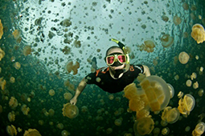

KAKABAN ISLAND
 Indonesia is a fascinating country in every sense of the word. Rich in culture, natural beauty and biodiversity. Home to the weird, the wacky and the wonderful. And just when you think you've seen and done it all, think again, for there is still a lot coming.
Indonesia is a fascinating country in every sense of the word. Rich in culture, natural beauty and biodiversity. Home to the weird, the wacky and the wonderful. And just when you think you've seen and done it all, think again, for there is still a lot coming.
Activities in Kakaban Island
For a really exceptional sensation, how about swimming with jellyfish? Yes, you heardit right, jellyfish, the one sea creature that is most likely to give you stings, itches, and all kinds of unpleasant swimming experiences. Well, at Kakaban Island in East Kalimantan, you can , not only swim unharmed with this fascinating creature, but you can actually touch them since the island is one of only two places on earth where you can find stingless jellyfish
Kakaban Island is a large coral atoll in the Derawan Archipelago in the Regency of Berau, off the east coast of East Kalimantan Province, covering 774 hectares of uninhabited terrain. Its most distinctive feature is a huge land-locked lake, which makes up almost two thirds of the island. This brackish lake is alive with several species of endemic marine life, including millions of stingless jellyfish that only exist in one other place on the planet which is at Palau in Micronesia. The island is shrouded among a tangle of dense mangrove forests, right down to where the water meets the earth. There are very few sections of beach, as most of Kakaban's circumference end in a rocky wall of sheer limestone cliffs, some sections dropping hundreds of feet to the choppy waves below.
Kakaban Island is one of 31 islands belonging to the Derawan archipelago, which include Sangalaki, Maratua and Derawan. Kakaban was elevated through years of geological pressure, which eventually sealed off what was once a lagoon, creating the Kakaban Lake. "Kakaban" comes from a word in the local dialect meaning "hug," because of the way the 9-shaped island "hugs" the lake in the center. Kakaban Lake has been declared a government nature reserve, and has been nominated as a World Heritage Zone.

The ecosystem of the lake is very similar to that of the open sea, but with a twist! The trapped sea-water diluted with rain water and ground water creates a unique habitat that has caused the creatures trapped inside to evolve! The lake has warm, brackish water of 11 to 17 meters in depth, and is carpeted in marine green algae. Four species of jellyfish crisscross the waters of Kakaban Lake, but unlike their counterparts beyond the coral wall, the lake-jellies have no natural predators, resulting in the evolution of the species to no longer need their venom as self-defense.
Other evolutionary processes have also taken place in this lake: The box jellyfish, normally one of the deadliest creatures in the world, in addition to losing its sting, it has shrunk to barely a third its normal size. The Spotted Jellyfish is no longer spotted, and the Cassiopeia swims upside down, with its tentacles to the surface. This is so the sun may shine on its algae-covered tentacles, creating a photosynthetic reaction and thereby producing food! Meanwhile, the white anemone has evolved into a passive jellyfish predator. Eight species of fish also dwell in this biological paradise, as well as sea cucumbers, sponges, crabs, snakes, and orange purple and yellow clams.